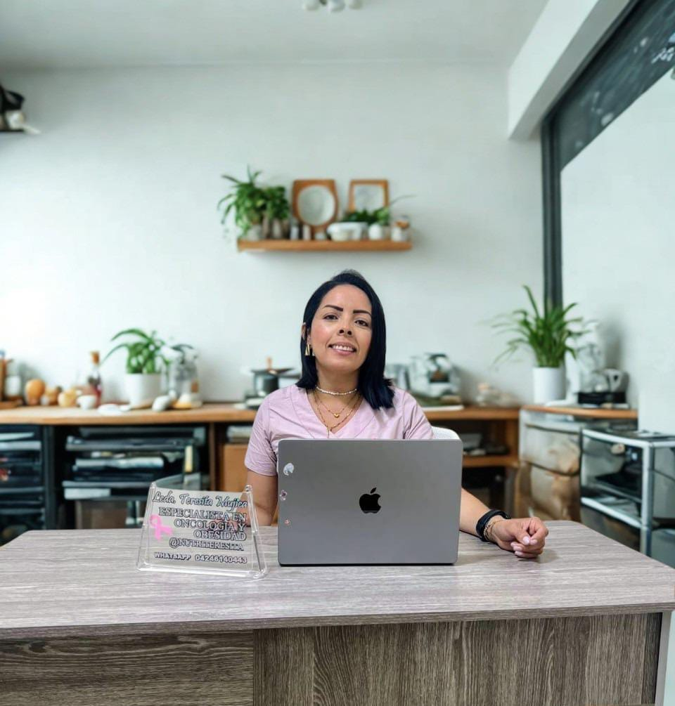

Bienestar Alimentario Integral
Descubre un enfoque nutricional adaptado a tus necesidades con atención personalizada y productos de origen natural.

Sobre mí
Conoce mi trayectoria clínica como Licenciada en Nutrición, mi enfoque terapéutico y cómo te acompaño en cada etapa hacia una vida saludable y equilibrada.

Consulta Online
Agenda tu cita remota desde cualquier lugar. Recibe un plan de alimentación 100% personalizado, asesoría continua y seguimiento de tus avances.

Recetas
Explora un catálogo de preparaciones nutritivas, variadas y fáciles de cocinar, diseñadas para mantener el gusto por comer sano sin privaciones.

Pedidos
Ordena aderezos artesanales, suplementos y productos naturales seleccionados. Configura tu entrega directa a domicilio con nuestro sistema de envío.

Test de Obesidad
Realiza una autoevaluación guiada sobre tu Índice de Masa Corporal (IMC) y estado nutricional preliminar para tomar decisiones informadas sobre tu salud.
Historias de Éxito
Descubre cómo nuestros productos naturales transforman la vida y salud de nuestros clientes.

"Los aderezos artesanales sin conservantes cambiaron completamente mis ensaladas. Logré mantener mi régimen nutricional sin aburrirme del sabor."
María González
Aderezos Artesanales
"Padecía de mucha pesadez digestiva. Al sustituir los productos ultraprocesados por los suplementos y aderezos recomendados por la Lcda. Teresita, mi digestión mejoró desde la primera semana."
Carlos Benítez
Línea Digestiva Natural
"Junto a la consulta online y el plan con snacks orgánicos, reduje mis niveles de ansiedad y bajé 8 kg en tres meses de forma muy natural y sin efecto rebote."
Elena Ramírez
Plan Funcional + Snacks
"Como deportista buscaba opciones naturales para aderezar mis comidas sin añadir sodio innecesario. La calidad de estos productos es insuperable."
Roberto Mendoza
Aderezos Bajos en Sodio
"Su servicio de pedidos directo a casa es comodísimo. Sé que estoy comprando ingredientes reales y seguros para el bienestar de toda mi familia."